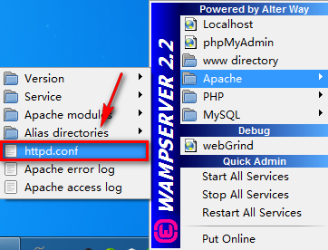
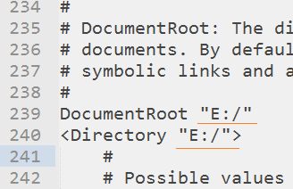
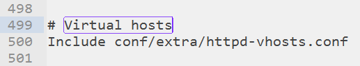
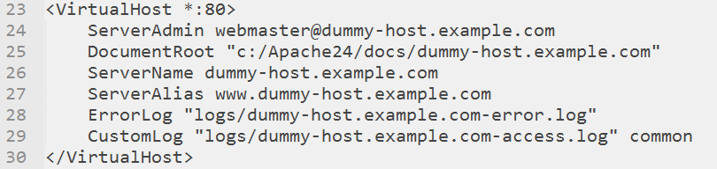
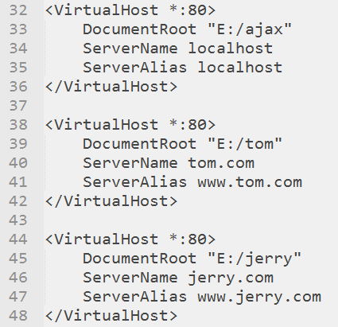
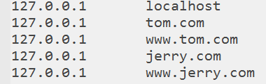

@(wamp配置)[wamp, 服务器, apache]
apache安装配置
安装
安装路径D:\wamp
配置根路径
默认的网站根路径是安装目录的www子目录（D:\wamp\www），如果不想使用默认目录，可以自己配置。配置方式如下：
- 找到文件D:\wamp\bin\apache\Apache2.4.4\conf\httpd.conf 或者打开如下文件（实际是同一个文件）

- 在文件中搜索DocumentRoot，找到239行位置
- 修改根路径为如下形式：(如果要配置虚拟主机，这里配置成根路径；如果不配置根路径，可以配置成D:\ajax；现在配置的是虚拟主机形式；两个位置应该保持一致)

配置虚拟主机
配置虚拟主机可以配置多个网站（域名和网站目录对应），配置步骤如下
开启虚拟主机辅配置，在httpd.conf 中找到如下位置,然后把前面的井号去掉
配置虚拟主机，打开conf/extra/httpd-vhosts.conf

分别修改以下三项，其它项无需指定。
+ DocumentRoot "E:/www/example"
+ ServerName "example.com "
+ ServerAlias "www.example.com"
- 修改DNS（hosts）文件(C:\Windows\System32\drivers\etc\hosts),
添加如下内容：
127.0.0.1 example.com
127.0.0.1 www.example.com - 重启apache
- 访问http://www.example.com或者http://example.com
配置多个虚拟主机的实例如下：
httpd-vhosts.conf文件配置
hosts文件配置
